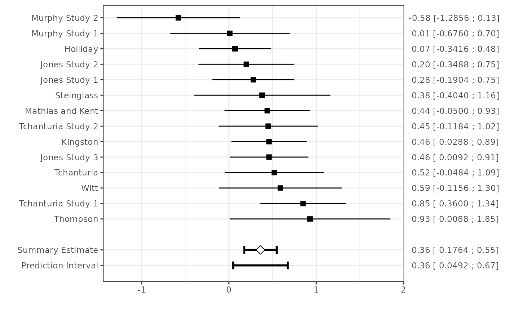

This function summarizes multiple estimates for a single parameter by assuming a fixed (i.e. common) effect or random effects across studies. The summary estimate is obtained by calculating a weighted mean that accounts for sample size and (in case random effects are assumed) for between-study heterogeneity.
Usage
uvmeta(
r,
r.se,
r.vi,
method = "REML",
test = "knha",
labels,
na.action,
n.chains = 4,
pars,
verbose = FALSE,
...
)Arguments
- r
Vector of numerics containing the effect size of each study
- r.se
Vector of numerics containing the standard error of the effect sizes
- r.vi
Vector of numerics containing the sampling variance of the effect sizes
- method
Character string specifying whether a fixed-effect or a random-effects model should be fitted. A fixed-effect model is fitted when using
method="FE". Random-effects models are fitted by setting method equal to one of the following:"REML"(Default),"DL","HE","SJ","ML","EB","HS","GENQ"or"BAYES". See 'Details'.- test
Optional character string when
method!="BAYES"to specify how test statistics and confidence intervals for the fixed effects should be computed. By default (test="knha"), the method by Knapp and Hartung (2003) is used for adjusting test statistics and confidence intervals. Type '?rma' for more details.- labels
Optional vector of characters containing the labels for the studies
- na.action
A function which indicates what should happen when the data contain NAs. Defaults to
"na.fail", other options are"na.omit","na.exclude"or"na.pass".- n.chains
Optional numeric specifying the number of chains to use in the Gibbs sampler (
method="BAYES"). More chains will improve the sensitivity of the convergence diagnostic, but will cause the simulation to run more slowly. The default number of chains is 4.- pars
Optional list with additional arguments. The width of confidence, credibility and prediction intervals is defined by
level(defaults to 0.95). The following parameters configure the MCMC sampling procedure:hp.mu.mean(mean of the prior distribution of the random effects model, defaults to 0),hp.mu.var(variance of the prior distribution of the random effects model, defaults to 1E6),hp.tau.min(minimum value for the between-study standard deviation, defaults to 0),hp.tau.max(maximum value for the between-study standard deviation, defaults to 2),hp.tau.sigma(standard deviation of the prior distribution for the between-study standard-deviation),hp.tau.dist(prior distribution for the between-study standard-deviation. Defaults to"dunif"),hp.tau.df(degrees of freedom for the prior distribution for the between-study standard-deviation. Defaults to 3).- verbose
If TRUE then messages generated during the fitting process will be displayed.
- ...
Additional arguments that are passed to rma or runjags (if
method="BAYES").
Value
An object of the class uvmeta for which many standard methods are available.
- "data"
array with (transformed) data used for meta-analysis, and method(s) used for restoring missing information.
- "method"
character string specifying the meta-analysis method.
- "est"
estimated performance statistic of the model. For Bayesian meta-analysis, the posterior median is returned.
- "se"
standard error (or posterior standard deviation) of the summary estimate.
- "tau2"
estimated amount of (residual) heterogeneity. Always 0 when method=
"FE". For Bayesian meta-analysis, the posterior median is returned.- "se.tau2"
estimated standard error (or posterior standard deviation) of the between-study variation.
- "ci.lb"
lower bound of the confidence (or credibility) interval of the summary estimate
- "ci.ub"
upper bound of the confidence (or credibility) interval of the summary estimate
- "pi.lb"
lower bound of the (approximate) prediction interval of the summary estimate
- "pi.ub"
upper bound of the (approximate) prediction interval of the summary estimate
- "fit"
the full results from the fitted model
- "slab"
vector specifying the label of each study.
Details
Unless specified otherwise, all meta-analysis models assume random effects and are fitted using restricted
maximum likelihood estimation with the metafor package (Viechtbauer 2010). Further, confidence intervals for
the average performance are based on the Hartung-Knapp-Sidik-Jonkman method, to better account for the uncertainty
in the estimated between-study heterogeneity (Debray 2016). A Bayesian meta-analysis can be performed by specifying
method="BAYES". In that case, the R packages runjags and rjags must be installed.]
For random-effects models, a prediction interval for the pooled effect size is displayed. This interval predicts in what
range future effect sizes will fall given what has already been observed (Higgins 2009, Riley 2011).
Bayesian meta-analysis models
For Bayesian meta-analysis models that involve the Gibbs sampler (method="BAYES"), the R packages runjags
and rjags must be installed. The Bayesian approach uses an uninformative Normal prior for the mean and a
uniform prior for the between-study variance of the pooled effect size (Higgins 2009). By default, the Normal prior
has a mean of 0 and a variance of 1000. These hyperparameters can, however, be altered through the
variables hp.mu.mean and hp.mu.var in the argument pars. The prior distribution of the between-study
standard deviation is given by a uniform distribution, by default bounded between 0 and 100.
References
Biggerstaff BJ, Tweedie RL. Incorporating variability in estimates of heterogeneity in the random effects model in meta-analysis. Statistics in Medicine 1997; 16: 753–768.
Borenstein M, Hedges LV, Higgins JPT, Rothstein HR. A basic introduction to fixed-effect and random-effects models for meta-analysis. Research Synthesis Methods 2010; 1: 97–111. doi:10.1002/jrsm.12
DerSimonian R, Laird N. Meta-analysis in clinical trials. Controlled Clinical Trials 1986; 7: 177–188.
Graham PL, Moran JL. Robust meta-analytic conclusions mandate the provision of prediction intervals in meta-analysis summaries. Journal of Clinical Epidemiology 2012; 65: 503–510.
Higgins JPT, Thompson SG. Quantifying heterogeneity in a meta-analysis. Statistics in Medicine 2002; 21: 1539–1558.
Higgins JPT, Thompson SG, Spiegelhalter DJ. A re-evaluation of random-effects meta-analysis. J R Stat Soc Ser A Stat Soc. 2009;172:137–59. doi:10.1111/j.1467-985X.2008.00552.x
Riley RD, Higgins JPT, Deeks JJ. Interpretation of random effects meta-analyses. British Medical Journal 2011; 342: d549. doi:10.1136/bmj.d549
Viechtbauer W. Conducting Meta-Analyses in R with the metafor Package. Journal of Statistical Software. 2010; 36. doi:10.18637/jss.v036.i03
Examples
data(Roberts)
# Frequentist random-effects meta-analysis
fit1 <- with(Roberts, uvmeta(r=SDM, r.se=SE, labels=rownames(Roberts)))
summary(fit1)
#> Call:
#> uvmeta.default(r = SDM, r.se = SE, labels = rownames(Roberts))
#>
#> Random effects summary: 0.36195 (SE: 0.0859)
#> Tau squared: 0.01322 (SE: 0.03431)
plot(fit1) #show a forest plot

fit1
#> Summary estimate with 95% confidence and (approximate) 95% prediction interval:
#>
#> Estimate CIl CIu PIl PIu
#> 0.36194806 0.17636909 0.54752703 0.04923206 0.67466405
if (FALSE) { # \dontrun{
# Bayesian random effects meta-analysis
fit2 <- with(Roberts, uvmeta(r=SDM, r.se=SE, labels=rownames(Roberts), method="BAYES"))
plot(fit2)
} # }